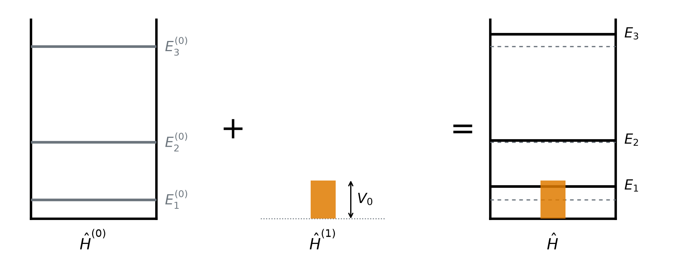
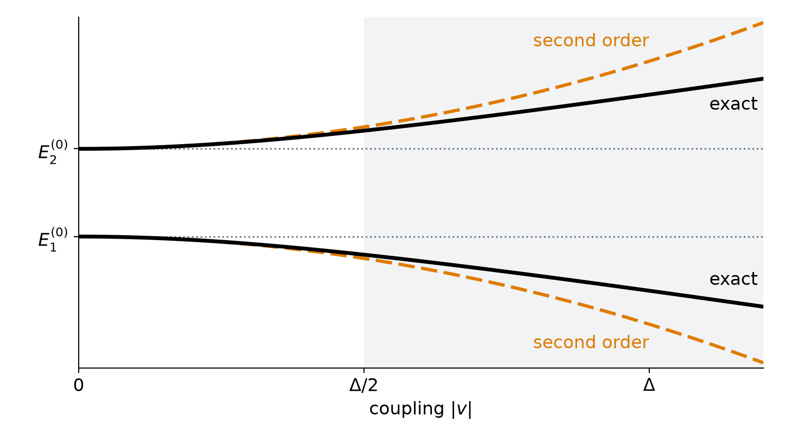
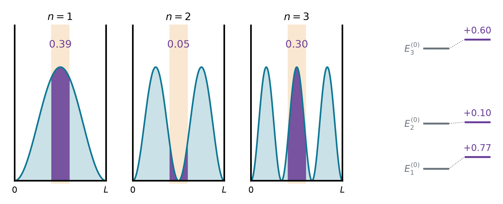
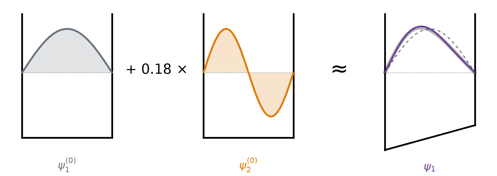
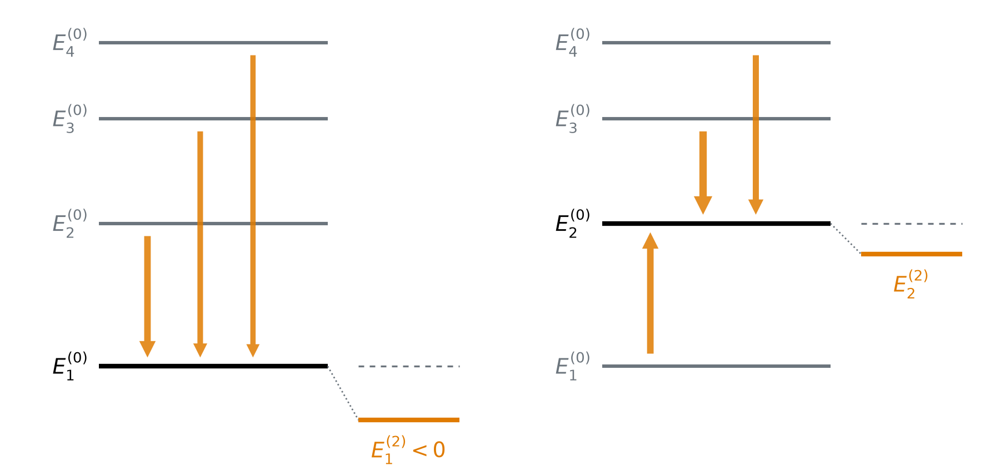
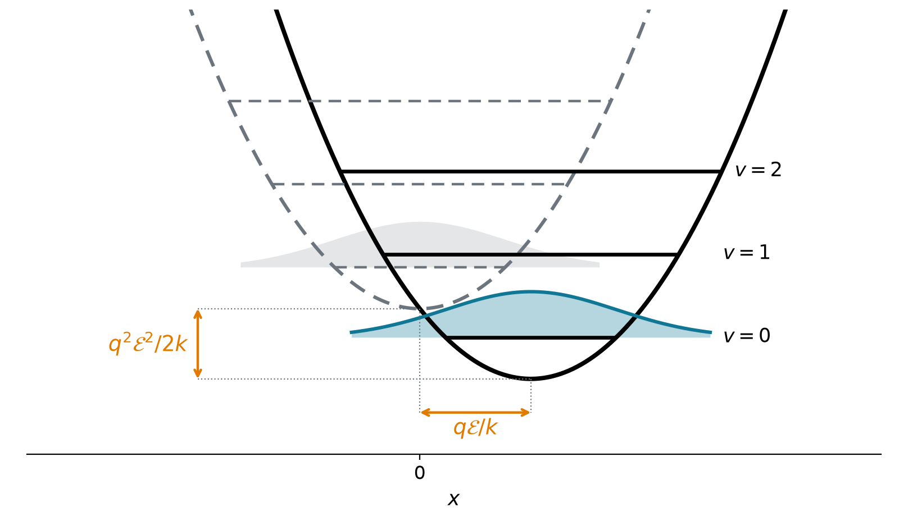
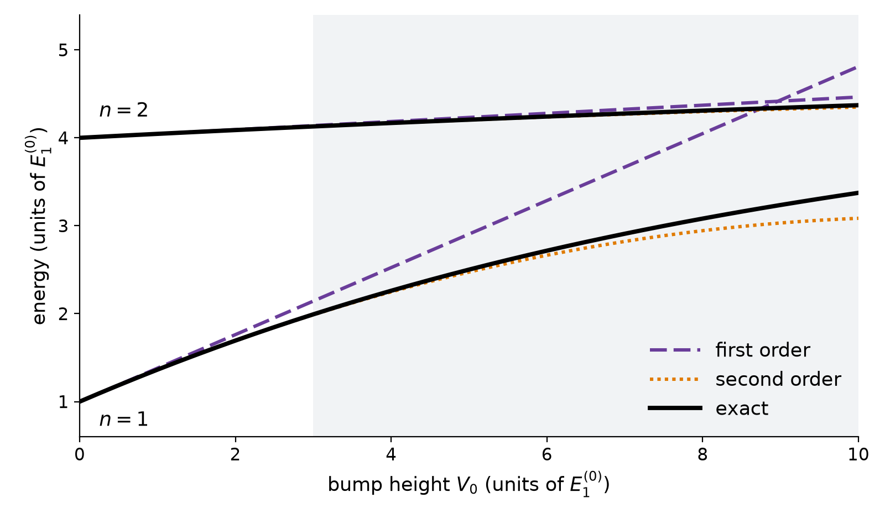
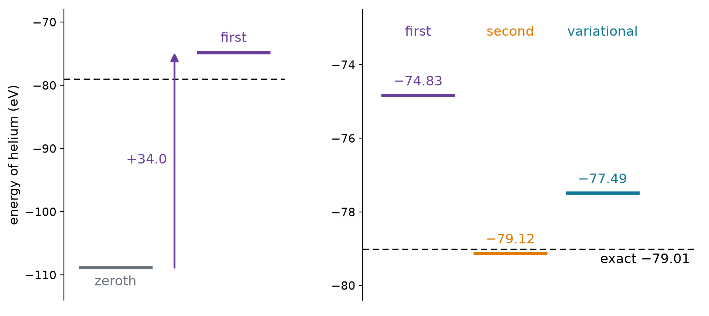

Chem 3240 · Lecture 6.2

\hat{H} = \hat{H}^{(0)} + \hat{H}^{(1)}, \qquad \hat{H}^{(0)}\psi_n^{(0)} = E_n^{(0)}\psi_n^{(0)} \quad\text{solved}
The superscripts count orders of correction. They are not powers.
| symbol | meaning |
|---|---|
| \hat{H}^{(0)} | the solved, unperturbed Hamiltonian |
| \hat{H}^{(1)} | the perturbation |
| E_n^{(0)}, \psi_n^{(0)} | the known levels and states of \hat{H}^{(0)}; in a bracket the state is \vert n\rangle |
| E_n^{(1)}, E_n^{(2)} | the first and second corrections to level n |
| \psi_n^{(1)} | the first correction to state n |
| \langle k\vert\hat{H}^{(1)}\vert n\rangle | a matrix element of the perturbation between unperturbed states |

From 6.1: two levels a gap \Delta apart, with a coupling \lambda v dialed on from \lambda = 0 to 1
E_- = \frac{E_1^{(0)} + E_2^{(0)}}{2} - \sqrt{\left(\frac{\Delta}{2}\right)^2 + \lambda^2v^2}
\phantom{E_-} = E_1^{(0)} - \lambda^2\,\frac{v^2}{\Delta} + \lambda^4\,\frac{v^4}{\Delta^3} - \dots
1. Dial the perturbation on, \hat{H} = \hat{H}^{(0)} + \lambda\hat{H}^{(1)}, and expand the unknown level and state in powers of \lambda
E_n = E_n^{(0)} + \lambda E_n^{(1)} + \lambda^2E_n^{(2)} + \dots, \qquad\qquad \psi_n = \psi_n^{(0)} + \lambda\psi_n^{(1)} + \dots
2. Insert into \hat{H}\psi_n = E_n\psi_n and sort by powers of \lambda: each power gives its own equation
\begin{aligned} \lambda^0:&\qquad \hat{H}^{(0)}\psi_n^{(0)} = E_n^{(0)}\psi_n^{(0)}\\ \lambda^1:&\qquad \hat{H}^{(0)}\psi_n^{(1)} + \hat{H}^{(1)}\psi_n^{(0)} = E_n^{(0)}\psi_n^{(1)} + E_n^{(1)}\psi_n^{(0)} \end{aligned}
Project the \lambda^1 equation onto the unperturbed state: multiply by \psi_n^{(0)*} and integrate
\langle n|\hat{H}^{(0)}|\psi_n^{(1)}\rangle + \langle n|\hat{H}^{(1)}|n\rangle = E_n^{(0)}\langle n|\psi_n^{(1)}\rangle + E_n^{(1)}\langle n|n\rangle
E_n^{(1)} = \langle n|\hat{H}^{(1)}|n\rangle = \int\psi_n^{(0)*}\,\hat{H}^{(1)}\,\psi_n^{(0)}\,d\tau
A box of length L has a bump of height V_0 between 0.4L and 0.6L. First-order shifts of the three lowest levels?
E_n^{(1)} = \int_0^L\left|\psi_n^{(0)}\right|^2V^{(1)}(x)\,dx = V_0\int_{0.4L}^{0.6L}\frac{2}{L}\sin^2\frac{n\pi x}{L}\,dx
E_1^{(1)} = 0.387\,V_0, \qquad E_2^{(1)} = 0.049\,V_0, \qquad E_3^{(1)} = 0.301\,V_0

Expand the correction to the state in the other unperturbed states (3.6):
\psi_n^{(1)} = \sum_{k \neq n} c_k\,\psi_k^{(0)}
Project the \lambda^1 equation onto another state, \langle k| with k \neq n:
E_k^{(0)}c_k + \langle k|\hat{H}^{(1)}|n\rangle = E_n^{(0)}c_k \quad\Longrightarrow\quad c_k = \frac{\langle k|\hat{H}^{(1)}|n\rangle}{E_n^{(0)} - E_k^{(0)}}

E_n \approx E_n^{(0)} + \langle n|\hat{H}^{(1)}|n\rangle + \sum_{k \neq n}\frac{\left|\langle k|\hat{H}^{(1)}|n\rangle\right|^2}{E_n^{(0)} - E_k^{(0)}}
\psi_n \approx \psi_n^{(0)} + \sum_{k \neq n}\frac{\langle k|\hat{H}^{(1)}|n\rangle}{E_n^{(0)} - E_k^{(0)}}\,\psi_k^{(0)}

A charge q on a spring (k = \mu\omega^2) in a field \mathcal{E}: \hat{H}^{(1)} = -q\mathcal{E}x. Shift of level v? From 4.2, x connects only v \pm 1, with |\langle v + 1|x|v\rangle|^2 = (v + 1)\hbar/2\mu\omega and |\langle v - 1|x|v\rangle|^2 = v\hbar/2\mu\omega.
E_v^{(1)} = -q\mathcal{E}\,\langle v|x|v\rangle = 0 \qquad (x \text{ is odd},\ |\psi_v|^2 \text{ is even})
E_v^{(2)} = q^2\mathcal{E}^2\left[\frac{(v + 1)\hbar/2\mu\omega}{-\hbar\omega} + \frac{v\hbar/2\mu\omega}{+\hbar\omega}\right] = -\frac{q^2\mathcal{E}^2}{2\mu\omega^2} = -\frac{q^2\mathcal{E}^2}{2k}

\tfrac{1}{2}kx^2 - q\mathcal{E}x = \tfrac{1}{2}k\left(x - \frac{q\mathcal{E}}{k}\right)^2 - \frac{q^2\mathcal{E}^2}{2k}

Treat the repulsion 1/r_{12} of helium’s two electrons as a perturbation of two He^+ ions (Z = 2). Energy to second order? Measured: -79.01 eV.
\begin{aligned} E^{(0)} &= 2\times\left(-\tfrac{1}{2}Z^2E_h\right) = -4E_h = -108.8\ \text{eV}\\ E^{(1)} &= \langle 1/r_{12}\rangle = \tfrac{5}{8}Z\,E_h = +34.0\ \text{eV}\\ E^{(2)} &= -0.158\,E_h = -4.3\ \text{eV}\\ E &\approx -108.8 + 34.0 - 4.3 = -79.1\ \text{eV} \end{aligned}

| effect | solved problem | perturbation | order | lecture |
|---|---|---|---|---|
| anharmonic levels | harmonic oscillator | cubic, quartic terms of the bond | 1st, 2nd | 4.3 |
| centrifugal distortion | rigid rotor | stretching by rotation | 2nd | 4.5 |
| Zeeman effect | hydrogen atom | (\mu_BB/\hbar)\hat{L}_z | 1st, exact | 5.3 |
| fine structure | hydrogen atom | spin-orbit coupling | 1st | 5.3 |
| polarizability | atom or molecule | dipole in a field | 2nd | today |
| dispersion forces, -C_6/R^6 | two separate atoms | their dipoles interacting | 2nd | today |
Split the Hamiltonian into a solved part and a small perturbation, and expand in powers of its strength. First order is the average of the perturbation in the unperturbed state: a bump raises each level by its height times the probability of finding the particle there. Second order sums the couplings to all other states, each squared and divided by a gap: levels repel, the nearest most strongly, and a ground state always drops. The method works when couplings are small compared with gaps. It gives a polarizability to every molecule, an attraction to every pair of atoms, and helium to within 0.1 eV.
Chem 3240 · Quantum Mechanics